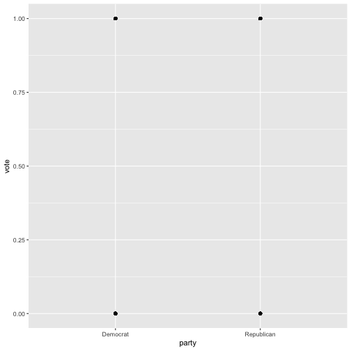
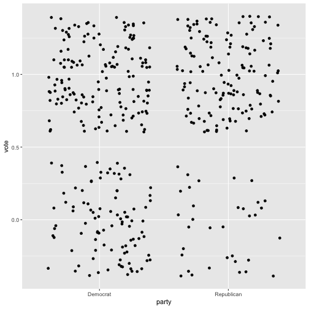

DA Homework 4 - SOLUTION
library(readr)
library(dplyr)
library(ggplot2)
Task 1
Download the civil-rights-act.csv from the Data section (it might make sense
to look at the description file as well). Using the data answer the questions
below (run regressions).
act <- read_csv('~/teaching/BME_adat/201617/data/civil-rights-act.csv')
## Parsed with column specification:
## cols(
## party = col_character(),
## state = col_character(),
## vote = col_integer()
## )
- Which of the two parties (democrats and republicans) were more
supportive for the Civil Rights Act? First, look at a scatter plot. It might
help to experiment with
jitterto see the points better. (Hint: look at this.)
act %>% ggplot(aes(x = party, y = vote)) + geom_point()

act %>% ggplot(aes(x = party, y = vote)) + geom_jitter()

- Run a regression of the dummy of voting on the dummy of
party (note that
Ris automatically going to use a character variable in a regression as a dummy.). What are the shares of the two parties who voted for the act?
lm(data = act, vote ~ party)
##
## Call:
## lm(formula = vote ~ party, data = act)
##
## Coefficients:
## (Intercept) partyRepublican
## 0.6129 0.1894
61.3% of Democrats, and 80.2% (61.3+18.9) of Republicans voted for the act.
- Which states (northern or southern) were more supportive for the act? What are the shares of the representatives in the two groups of states who voted for the act?
lm(data = act, vote ~ state)
##
## Call:
## lm(formula = vote ~ state, data = act)
##
## Coefficients:
## (Intercept) stateSouth
## 0.8956 -0.8283
Northern states were more supportive for the act: almost 90% of the representatives voted for the act, whereas only 7.8% did from the southern states.
- When controlling for the state which party were more supportive for the act? How does it compare to what you found in task b)? How could you explain the difference?
lm(data = act, vote ~ party + state)
##
## Call:
## lm(formula = vote ~ party + state, data = act)
##
## Coefficients:
## (Intercept) partyRepublican stateSouth
## 0.94076 -0.08814 -0.86497
If we control for state, Republicans are less supportive for the act. This is quite the opposite than what we found in task b). This could be explained by compositional effect (similar to what we found with Berkeley and discrimination). Southern states are less supportive for the act, and they are also more Democrat, whereas northern states are more Republican. When not controlling for state, we get that Republicans vote for the act. However, if we compare Republicans and Democrates from the same state, we see that they are less likely to vote for it.
act %>%
group_by(state) %>%
count(party)
## # A tibble: 4 x 3
## # Groups: state [2]
## state party n
## <chr> <chr> <int>
## 1 North Democrat 154
## 2 North Republican 162
## 3 South Democrat 94
## 4 South Republican 10
Task 2
Use the easyshare_sample.csv for this task. This is a sample of the easyshare
project (you can read more about this here).
The Survey of Health, Ageing and Retirement in Europe is a multidisciplinary
panel survey targeting individuals above 50 years. Hungary participated once,
in the 4th wave. The data is about the Hungarian sample with only a few
variables: lm_status is originally called as ep005_, mbirth as dn002_mod.
You can read about the variables here.
The recall variables contain scores from a simple memory test: 10 simple words
are listed to the participants of the survey which they should repeat once
immediately (recall_1) and once with some delay (recall_2). The sum of these
two numbers (ranging from 0 to 20) form a great measure for the memory of the elderly.
- Know your data. Look at summaries, strange values, and try to clean them.
(Hint: negative values usually mean missing values, turn them into
NA-s.)
easyshare <- read_csv('~/teaching/BME_adat/201617/data/easyshare_sample.csv')
## Parsed with column specification:
## cols(
## age = col_double(),
## lm_status = col_integer(),
## recall_1 = col_integer(),
## recall_2 = col_integer(),
## eduyears = col_integer(),
## mbirth = col_integer()
## )
summary(easyshare)
## age lm_status recall_1 recall_2
## Min. :-15.00 Min. :-15.000 Min. :-15.000 Min. :-15.000
## 1st Qu.: 57.20 1st Qu.: 1.000 1st Qu.: 4.000 1st Qu.: 2.000
## Median : 63.00 Median : 1.000 Median : 5.000 Median : 4.000
## Mean : 64.59 Mean : 2.593 Mean : 4.763 Mean : 3.251
## 3rd Qu.: 71.30 3rd Qu.: 2.000 3rd Qu.: 6.000 3rd Qu.: 5.000
## Max. :100.70 Max. : 97.000 Max. : 10.000 Max. : 10.000
## eduyears mbirth
## Min. :-15.00 Min. :-15.000
## 1st Qu.: 8.00 1st Qu.: 3.000
## Median : 11.00 Median : 6.000
## Mean : 10.52 Mean : 6.273
## 3rd Qu.: 12.00 3rd Qu.: 9.000
## Max. : 25.00 Max. : 12.000
easyshare <- easyshare %>% mutate_all(funs(ifelse(. < 0, NA, .)))
summary(easyshare)
## age lm_status recall_1 recall_2
## Min. : 29.10 Min. : 1.000 Min. : 0.000 Min. : 0.00
## 1st Qu.: 57.25 1st Qu.: 1.000 1st Qu.: 4.000 1st Qu.: 2.00
## Median : 63.00 Median : 1.000 Median : 5.000 Median : 4.00
## Mean : 64.61 Mean : 2.789 Mean : 5.163 Mean : 3.62
## 3rd Qu.: 71.30 3rd Qu.: 2.000 3rd Qu.: 6.000 3rd Qu.: 5.00
## Max. :100.70 Max. :97.000 Max. :10.000 Max. :10.00
## NA's :1 NA's :34 NA's :61 NA's :61
## eduyears mbirth
## Min. : 0.00 Min. : 1.000
## 1st Qu.: 8.00 1st Qu.: 3.000
## Median :11.00 Median : 6.000
## Mean :10.58 Mean : 6.308
## 3rd Qu.:12.00 3rd Qu.: 9.000
## Max. :25.00 Max. :12.000
## NA's :7 NA's :5
- Create a new dummy variable which takes one for those who do not work (for whom
lm_statusnot equal to 2). Create a new variable which is the total word recall.
easyshare <- easyshare %>%
mutate(
notworking = as.numeric(lm_status != 2),
twr = recall_1 + recall_2
)
- Look at whether the memory of those who are not working are worse than those who do. Run a regression which answers this question and interpret the coefficients.
lm(twr ~ notworking, easyshare)
##
## Call:
## lm(formula = twr ~ notworking, data = easyshare)
##
## Coefficients:
## (Intercept) notworking
## 10.844 -2.582
Comparing two elderly, those who do not work recall on average 2.6 words less than those who do.
- Is there any other variable you may want to include the regression to get closer to the answer of the question whether working preserves ones memory? Include it in the regression and interpret your results.
Elderly who do not work are usually older, and might be less educated (educated people typically work longer). Older and less educated people might have worse memory anyway, independently of whether they actually work. Let’s control for these variables as well.
lm(twr ~ notworking + age + eduyears, easyshare)
##
## Call:
## lm(formula = twr ~ notworking + age + eduyears, data = easyshare)
##
## Coefficients:
## (Intercept) notworking age eduyears
## 12.6673 -0.5479 -0.1157 0.3803
Comparing two elderly with the same age and education, one who works and someone else who do not, the latter recalls on average a half word less. This difference is much smaller than what we found in the previous exercise.
Task 3
Collect the data you would like to use for your term project. Make a plot, or run a regression using that data, and interpret your results.
Task +1
Watch this video and collect 3 positive (or negative) points about the presentation.